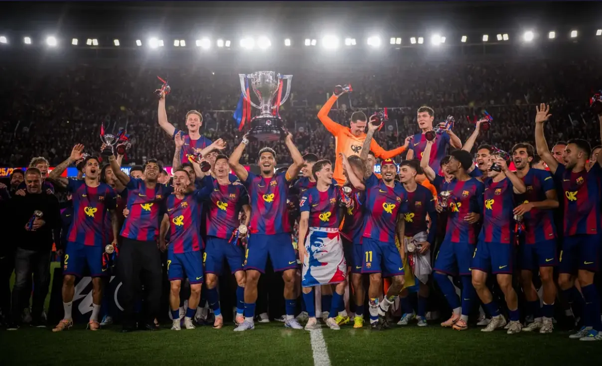
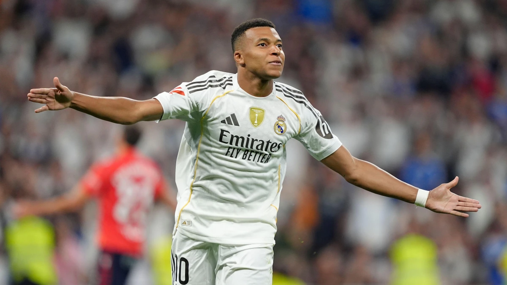
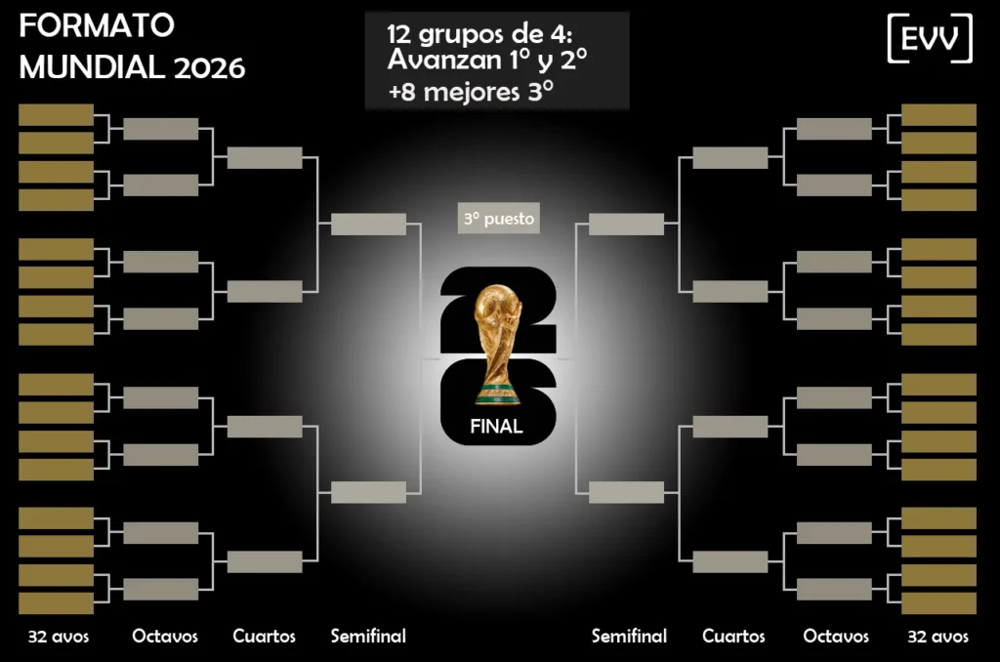
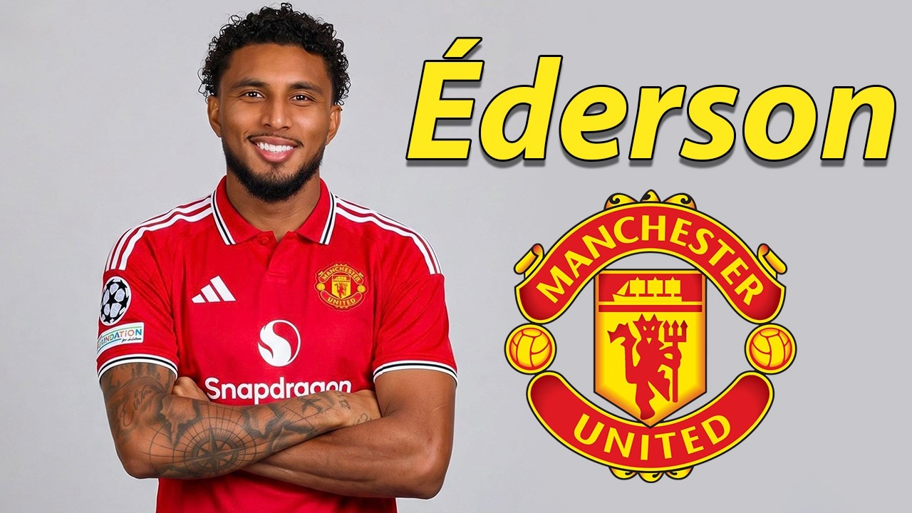
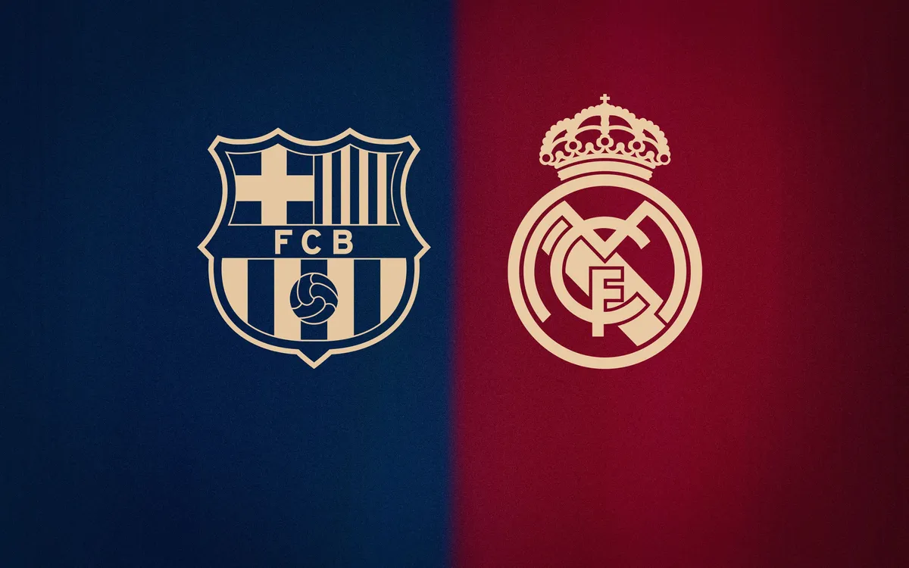
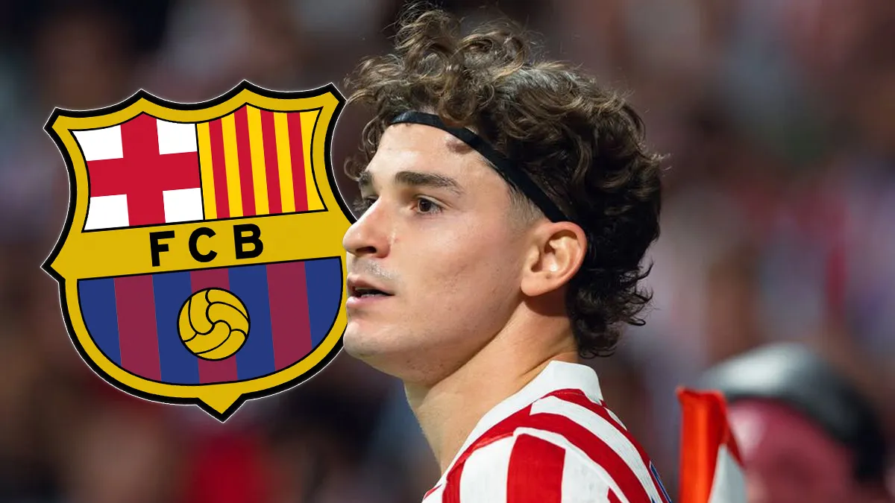
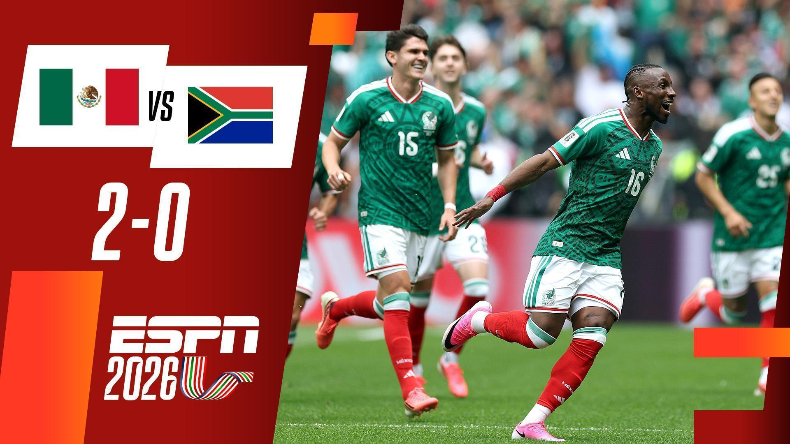

Informacion al dia todo relacionado con el mundo del futbol
Para que es esta pagina?
La página abarcará todo lo relacionado con el mundo del fútbol, ofreciendo información actualizada sobre las grandes ligas del planeta,desde la Premier League y LaLiga hasta la Serie A, Bundesliga y Ligue 1. Se cubrirán noticias de clubes, perfiles de jugadores destacados y fichajes de último momento que marcan tendencia en el mercado.
Además, se dará seguimiento a los partidos de selecciones nacionales, incluyendo eliminatorias, amistosos y torneos internacionales como la Copa América, la Eurocopa y la Copa Africana de Naciones. También se pondrá especial atención a los Mundiales, narrando su historia, las hazañas más memorables y las estrellas que han brillado en cada edición.
El sitio ofrecerá análisis tácticos, estadísticas relevantes y crónicas de encuentros decisivos, junto con secciones dedicadas a la evolución del fútbol femenino y juvenil. Todo esto acompañado de galerías visuales, entrevistas y artículos que reflejen la pasión y el impacto cultural del deporte rey en diferentes rincones del mundo.
La copa del mundo 2026
La Copa del Mundo 2026 se jugará en Estados Unidos, Canadá y México, con 48 selecciones participando por primera vez en esta fase final. Se espera que sea uno de los torneos más emocionantes de la historia, gracias al regreso de grandes estrellas, nuevos estadios modernos y partidos en tres países diferentes.
Además, la fase de grupos será más extensa y habrá más partidos para los aficionados de todo el mundo. Esta edición puede marcar una era nueva en el fútbol, con grandes promesas jóvenes y rivalidades históricas que se vivirán en cada estadio.
Lanzamiento del video musical del mundial!
La canción oficial de la Copa Mundial de la FIFA 2026 es Dai Dai, interpretada por Shakira y Burna Boy. La canción fue creada para representar la unión, la pasión y la celebración del fútbol entre las naciones participantes del torneo.
Selecciones con plantillas confirmadas para el Mundial 2026!
La FIFA ya confirmó las listas oficiales de las 48 selecciones que participarán en la Copa Mundial de la FIFA 2026. En total, competirán 1,248 jugadores, distribuidos en plantillas de entre 23 y 26 futbolistas por selección.
Argentina
Brasil
España
Francia
Alemania
inglaterra
portugal
mexico
canada
estados unidos
El torneo contará con figuras internacionales como Lionel Messi, Cristiano Ronaldo, Kylian Mbappé, Vinícius Júnior y Jude Bellingham, quienes buscarán llevar a sus selecciones al título mundial.
Además, selecciones debutantes como Uzbekistán, Jordania, Cabo Verde y Curazao participarán por primera vez en una Copa del Mundo.
La liga

El barcelona salio campeon de la liga 25-26, salio campeon delante de su clasico rival Real madrid.

Kylian Mbappe salio pichichi en la liga 25-26, Con un total de 25 goles con la camisa merengue.
Confirmacion de neymar hacia el mundial!
Neymar vuelve a representar a Brasil en la Copa Mundial de la FIFA 2026, convirtiéndose en uno de los jugadores
más esperados del torneo. Tras superar varias lesiones, fue incluido en la convocatoria oficial y buscará cumplir
su sueño de conquistar el título mundial con la selección brasileña.
Nuevo formato histórico

La Copa Mundial de la FIFA 2026 será la primera en contar con 48 selecciones participantes, convirtiéndose en la edición
más grande de la historia. El torneo se disputará en Estados Unidos, México y Canadá.
Las 5 Grandes Ligas de Europa
Las cinco grandes ligas europeas son la Premier League, LaLiga, Serie A, Bundesliga y Ligue 1. Estas competiciones son consideradas las más importantes del fútbol mundial debido a su nivel de juego, la calidad de sus jugadores y la popularidad de sus clubes.
Cada temporada reúnen a millones de aficionados alrededor del mundo y cuentan con equipos históricos como Real Madrid, FC Barcelona, Manchester City, Liverpool FC, Bayern Munich, Juventus y Paris Saint-Germain.
Además de definir a los campeones nacionales, estas ligas sirven como clasificación para torneos internacionales como la UEFA Champions League, donde los mejores equipos de Europa compiten por el título más prestigioso a nivel de clubes.
El extremo inglés Anthony Gordon está muy cerca de convertirse en nuevo jugador del FC Barcelona. Según diversos reportes, el club catalán alcanzó un acuerdo con el Newcastle United por una cifra cercana a los 80 millones de euros, superando el interés de equipos como Bayern Múnich y Liverpool.
Gordon, de 25 años, llega tras destacar en la Premier League gracias a su velocidad, desborde y capacidad ofensiva. Su incorporación busca fortalecer las bandas del conjunto azulgrana de cara a la próxima temporada.
Nota: al momento de esta publicación, el club aún no ha realizado el anuncio oficial del fichaje.
Éderson al Manchester United
El mediocampista brasileño Éderson se convertirá en el primer fichaje de la era de Michael Carrick en el Manchester United. El acuerdo con Atalanta ronda los 40 millones de euros y solo falta la revisión médica para oficializarlo.

Los cules y los merengues se refuerza

El mercado de fichajes sigue dando de qué hablar. El FC Barcelona trabaja en reforzar su ataque y varios rumores apuntan a jugadores como Julián Álvarez y Harry Kane como posibles objetivos para la próxima temporada.
Por su parte, el Real Madrid busca fortalecer su defensa y el mediocampo. Entre los nombres más mencionados aparecen Ibrahima Konaté, Rodri y Erling Haaland, aunque por ahora muchos de estos movimientos siguen siendo rumores de mercado.
Rodri y Haaland al Real Madrid
Los nombres de Rodri y Erling Haaland siguen sonando alrededor del Real Madrid. Aunque no existe ningún acuerdo oficial, ambos jugadores aparecen entre los rumores más fuertes del mercado europeo.
Julián Álvarez sigue gustando al Barcelona

Diversos reportes indican que el Barcelona mantiene interés en Julián Álvarez. El delantero argentino sería una de las opciones para potenciar el ataque azulgrana.
Inicio del mundial 2026!
Mexico gana contra sudafrica en un encuentro emocionante!

La selección de México inició con paso firme su participación en la Copa del Mundo 2026 tras derrotar 2-0 a Sudáfrica en un encuentro correspondiente al Grupo A. El conjunto mexicano mostró superioridad durante gran parte del partido, controlando la posesión del balón y generando las ocasiones más peligrosas en ataque.
Con este resultado, México suma sus primeros tres puntos del torneo y se coloca en una posición favorable dentro del grupo. La solidez defensiva y la eficacia frente al arco fueron claves para asegurar una victoria que ilusiona a la afición de cara a los próximos compromisos.
El próximo desafío para México será ante Corea del Sur, mientras que Sudáfrica buscará recuperarse cuando enfrente a Chequia. La victoria deja buenas sensaciones para el combinado mexicano, que aspira a avanzar a la siguiente fase del campeonato.
Alemania firma la goleada del torneo
Alemania aplastó 7-1 a Curazao, logrando la victoria más amplia registrada hasta ahora en la Copa del Mundo 2026.
El Mundial 2026 rompe récords de asistencia en sus primeros días
Los primeros días del Mundial 2026 han estado marcados por una gran respuesta de los aficionados, con estadios repletos y un ambiente espectacular en las sedes de México, Estados Unidos y Canadá. El torneo, que cuenta por primera vez con 48 selecciones participantes, está atrayendo a miles de seguidores de todo el mundo, confirmando el enorme impacto global de la competición y consolidando esta edición como una de las más seguidas de la historia.
se produce protesta por el mundial de 2026
Se produce las primeras tarjetas rojas en el mundial
México y Sudáfrica protagonizaron un intenso partido inaugural del Mundial 2026, que terminó con tres expulsiones, un récord para un encuentro de apertura. Las tarjetas rojas marcaron un duelo que finalizó con triunfo mexicano por 2-0.
Estados Unidos debutó con goleada
El conjunto estadounidense venció 4-1 a Paraguay y se posicionó como uno de los equipos más fuertes en el inicio del torneo.
Brasil tropezó en su estreno
La Canarinha no pasó del empate 1-1 frente a Marruecos, dejando dudas en su debut mundialista.
España no pudo con Cabo Verde
La selección española empató 0-0 en su primer partido y dejó escapar dos puntos importantes.
La pagina fue hecha con fines de aplicar el conocimiento de fundamentos web cumpliendo un minimo de requisito.
tema principal es el futbol todo gira en su mundo y como se relaciona con los fans y los futbolista.